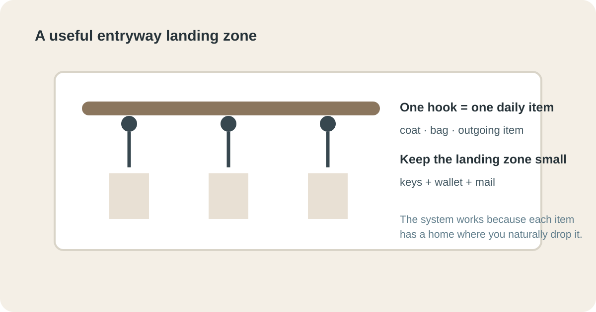

STORAGE & ORGANIZATION · ENTRYWAY
Quiet Entryway Storage
An entryway does not need a large cabinet or a perfect display. Start with what arrives with people every day (coats, shoes, bags and keys), give each a small, convenient home and move the overflow elsewhere.

Quick answer
The short version: give each daily item one small home near the door and cap it.
- Coats: one hook per daily coat, at a height people can reach while carrying something. Hooks around 60 to 66 in (150 to 165 cm) high are a common starting point for adults; test it with the people who will use them.
- Keys and small items: one tray or small shelf, nothing else in it.
- Shoes: a shallow rack or bench for the pairs worn this week. Shoe racks are often around 10 to 14 in (25 to 35 cm) deep, so check what your path can take.
- Everything else: seasonal coats, spare bags and sports gear live in a closet or high shelf.
- Walking path: keep a clear lane of about 36 in (90 cm) wherever the space allows.
These are starting points, not rules. Measure your own entrance and your own household before you commit.
1. Start with the arrival routine
Stand at the door and imagine arriving with a coat, bag, keys and shoes. Where does each item go in the first 30 seconds? If the answer is “wherever there is space,” the entryway will become a pile. Watch the real routine for several days before buying anything: what lands on the floor, what stays on a chair and what travels deeper into the home tells you which storage must be closest to the door.

2. Give daily coats a few wall hooks
Hooks are often more useful than hangers for daily coats: there is no closet door to open and the next use is obvious. Install only enough for normal demand (if a household has four daily coats, four hooks beat a wall of twelve). Place them at a height people can use while carrying something else, and keep the door, furniture and walking path clear.

3. Create one small landing zone
Keys, sunglasses and receipts need a destination closer than the kitchen counter: a narrow tray or small shelf. Keep it small, and when it is full, process its contents rather than buying a bigger container. Do not mix mail, batteries, coins and keys, or the tray becomes a miniature junk drawer. Limit it to items that belong to arriving and leaving.

4. Keep shoe storage shallow and honest
Shoes arrive in pairs and multiply quickly. Begin with the pairs used most often and give them a shallow rack, bench shelf or open cubby that fits the walking path; avoid storage that needs a door opened for every pair. Move seasonal and rarely used footwear to a closet or bedroom, where it can hold more volume without narrowing the entrance.
5. Separate daily storage from seasonal overflow
An entryway is a high-traffic zone, not a warehouse. Winter coats, guest umbrellas, sports equipment and extra bags do not all need to live beside the door every day. Keep current essentials close and rotate the rest to a closet, high shelf or labeled storage area, so people face fewer decisions at the door.
6. Give bags a deliberate home
Bags are the biggest source of entryway clutter because they are flexible and keep changing. Give daily bags two or three hooks or one basket, and separate work, school and shopping bags only if that helps people find them faster. If a bag keeps ending up on the floor, ask why: the hook may be too high, the basket too full or the storage behind a door nobody wants to open. Fix the friction instead of blaming the habit.
7. Hide the small visual noise
A small lidded box or basket can contain items that are used often but look messy scattered, such as dog-walking gear or winter gloves. Containment works when the category is narrow: “everything” is not a category, “dog-walking gear” is. A defined category makes it easier to return items and to notice when the container is overloaded.
8. Protect the walking path
Storage should never make arrival harder. Mark the natural walking path from the door and keep its width clear. Avoid deep furniture that forces people sideways, or hooks that catch clothing as someone passes. When space is tight, shallow wall storage usually beats a large floor unit: measure before buying, because an organizer that projects into the path is no improvement.
9. Make the reset take less than two minutes
At the end of the day, work through this list. It is maintenance, not a second organizing project.
- Hang daily coats and bags.
- Pair and place daily shoes.
- Return keys and small items to the landing zone.
- Move obvious out-of-place objects to their homes.
- Remove one item if a container is full.
If the reset takes longer than two minutes on a normal day, the storage is asking the household to do too much sorting at the door.
10. Test the entryway when everyone is rushing
A calm Saturday morning can hide a poor system, so test the entryway when people are leaving for work or school: can someone grab a coat, find keys and put on shoes without moving another person's things? If two people always need the same hook, add one nearby. If bags fall from a basket, reduce its contents or change the method. If shoes spread across the path, the daily shoe zone is too small or too far from the door.
11. Protect the wall, floor and people using the entrance
Before installing hooks or shelves, check the wall surface and the fixing method for the weight you expect them to carry. Follow the hardware manufacturer's instructions and use suitable fixings for the wall type.
Safety first. Fix hooks and shelves into studs or with anchors rated well above the load, and anchor tall or top-heavy furniture to the wall. Keep sharp corners and protruding hardware out of the walking route, especially in narrow entrances, and wipe up water promptly to prevent slips.
Also consider wet items: coats, umbrellas and shoes bring water in. A washable mat, a drip-safe place for umbrellas and a cleanable shoe area are more useful than delicate decorative storage. The U.S. Consumer Product Safety Commission's home-safety resources are a useful reference when a storage project involves furniture stability or installation: CPSC home-safety guidance.
Once the setup is secure, test it with the real arrival routine. If people can enter, put things away and carry on without rearranging the storage, the system is quiet in the way that matters.
Set a visible capacity limit
Every container should have a practical maximum. Once it is full, something needs to leave; you do not need a larger container. Capacity limits stop temporary storage from becoming permanent, which matters most in small homes.
| Container | Holds | When it is full |
|---|---|---|
| Key tray | Daily keys and small arrival items | Process the contents |
| Basket | One small category | Remove one item |
| Shoe shelf | Active pairs only | Move seasonal pairs elsewhere |
| Hooks | Daily coats and bags | Rotate out what is not worn |
Make room for the awkward items
Umbrellas, reusable shopping bags, helmets, pet leads and small parcels can break an otherwise tidy system. Instead of a large miscellaneous basket, decide which awkward items genuinely need an entryway home, give the most common one a defined spot and move occasional items to a nearby cupboard or utility area. For anything wet, dirty or heavy, choose a surface that can handle it: a washable mat under wet shoes, and a sturdy hook, not a decorative one meant for light clothing, for a loaded bag. Keep fragile objects out of the traffic path. The goal is not to make every object visible; it is to make the frequent actions easy and contain the exceptions.
What not to buy yet
- A big entryway cabinet before you have watched the arrival routine for a few days.
- A long row of hooks. Buy one per daily coat and add more only if a hook is shared.
- A deep shoe unit if it narrows the lane. Shallow and open usually wins.
- More baskets. Define the category and the limit first.
Quick win (10 minutes)
- Take everything off the floor and the nearest chair.
- Put the keys, wallet and sunglasses in one tray, and only those.
- Keep this week's shoes by the door and move the rest to a closet.
- Hang the daily coats on the hooks you already have. Count what does not fit: that number is how many hooks to add.
Frequently Asked Questions
How do I organize a small entryway?
Create a small landing zone for daily items, use a few sturdy hooks and keep seasonal or duplicate items elsewhere.
Where should I put coats in a small entryway?
Use accessible wall hooks for the coats used most often and move seasonal overflow to a closet or other storage area.
How can I hide entryway clutter?
Contain small loose items in one tray or basket and keep shoes, bags and seasonal items in defined zones rather than spreading them across the floor.
How many hooks should an entryway have?
Use enough hooks for normal daily demand, not every possible coat. Too many hooks can become an invitation to fill the wall.
What is the best storage for shoes near the door?
Choose a shallow, easy-to-access solution that fits the actual number of pairs used daily and does not block the walking path.
Quiet entryway storage is mostly about reducing friction. Give daily things a convenient place, move overflow elsewhere and keep the path clear. When the system is easy enough to use while arriving with full hands, it is usually easy enough to maintain.